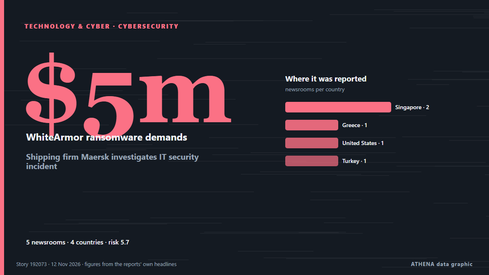

Cybersecurity
SponsoredPresented by  Cybernetics and Artificial Intelligence Lab Welcome to the Cybernetics and Artificial Intelligence Laboratory, established at the Department of Business Administration of the National and Kapodistrian University of Athens. The lab is headed by Professor Dimitrios Thomakos. The lab aims to do research that can be published in top venues. Our research uses tools and methods of Artificial Intelligence, and lies in the following areas: - Forecasting - Decision making - Cyber security - Finance We are always looking forward to collaborating with exceptional students!
Cybernetics and Artificial Intelligence Lab Welcome to the Cybernetics and Artificial Intelligence Laboratory, established at the Department of Business Administration of the National and Kapodistrian University of Athens. The lab is headed by Professor Dimitrios Thomakos. The lab aims to do research that can be published in top venues. Our research uses tools and methods of Artificial Intelligence, and lies in the following areas: - Forecasting - Decision making - Cyber security - Finance We are always looking forward to collaborating with exceptional students!
| 30 Oct | 0 |
|---|---|
| 31 Oct | 0 |
| 1 Nov | 0 |
| 2 Nov | 0 |
| 3 Nov | 0 |
| 4 Nov | 0 |
| 5 Nov | 0 |
| 6 Nov | 0 |
| 7 Nov | 1 |
| 8 Nov | 1 |
| 9 Nov | 3 |
| 10 Nov | 8 |
| 11 Nov | 4 |
| 12 Nov | 0 |

Shipping firm Maersk investigates IT security incident
The company said customers can continue to use Maersk platforms to book and manage shipments as usual. from The Straits Times
Git Patches Flaw That Lets Malicious Repositories Execute Code During Recursive Clones
A flaw in Git can let a malicious repository run an attacker's code on a computer that clones it recursively, together with its submodules. from The Hacker News
Dreeze Emerges From Stealth With $33M to Rebuild Cloud Apps After Cyberattacks
Created by Zerto and Kashya veterans, the startup has launched a platform designed to recover whole cloud applications. from SecurityWeek
Cisco BroadWorks and Openwave Flaws Actively Exploited Despite Available Patches
The flaws, CVE-2026-111793 and CVE-2026-20320, let attackers leak sensitive information, including configuration data. from SecurityWeek
Thai Airways Reports Breach Involving Over 60,000 Passenger Records
Thai Airways is investigating unauthorized access to passenger booking information held by its service provider Amadeus, with around 60,529 records potentially affected, the airline said on 9… from Laotian Times
France vows tough response to freezer cyberattack, as Iran rejects 'baseless accusations'
French Foreign Minister Jean-Noël Barrot said Paris ruled out 'nothing' in response to the first such large-scale cyber sabotage on French territory. from Le Monde (English)
France supermarket hack marks new phase in Iran's shadow war
The cyberattack on supermarket refrigerators that France has blamed on Iran marks a new phase in the asymmetric campaign Tehran is waging against the United States, extending it onto European soil… from Al-Monitor
France blames Iran for ‘unprecedented’ supermarket fridge cyberattack
France's foreign minister has blamed Iran for Europe-wide attacks on fridges and electronics that caused widespread disruption and panic last month, warning that "there will be consequences". from The National
Hackers exploit trusted AWS access to breach multiple cloud environments
A threat actor used compromised identity and access management (IAM) credentials for a Qubole big data platform's AWS account to access and exfiltrate data from multiple customers' AWS environments. from BleepingComputer
Who are Shahid Kaveh? Iranian cybercriminal gang blamed for France supermarket fridge hack
France’s foreign minister has said that the actions ‘will not go unanswered’ from The Independent
Russian Turla Hackers Use New Cereal Malware to Steal Emails From Government Exchange Servers
The Russia-aligned state-sponsored threat actor known as Turla (aka Snake) is wielding a previously undocumented cyber espionage toolset called Cereal that's used to break into victims' Microsoft… from The Hacker News
Hackers Claim Leaked Rosstat Data Shows 450,000 Russian Deaths
Cyber groups Belarusian Cyberpartisans and Silent Crow have claimed that exfiltrated records from Russia’s State Statistics Service (Rosstat) indicate between 394,000 and 450,000 deaths linked to the… from Kyiv Post